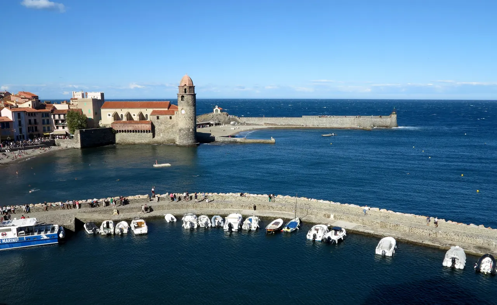
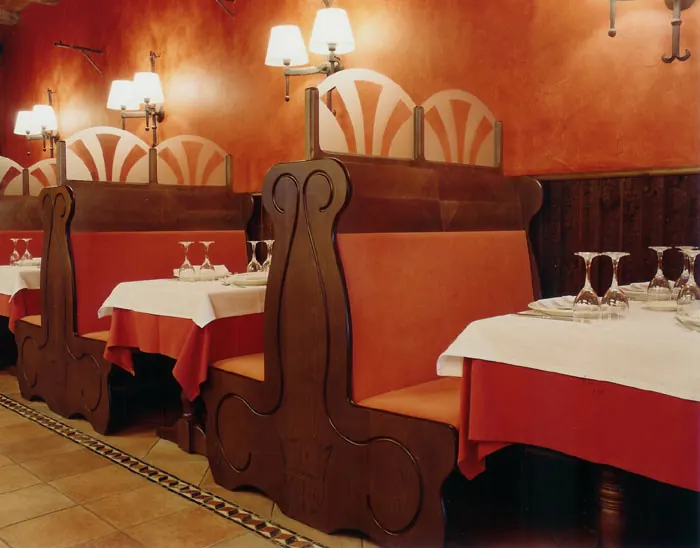
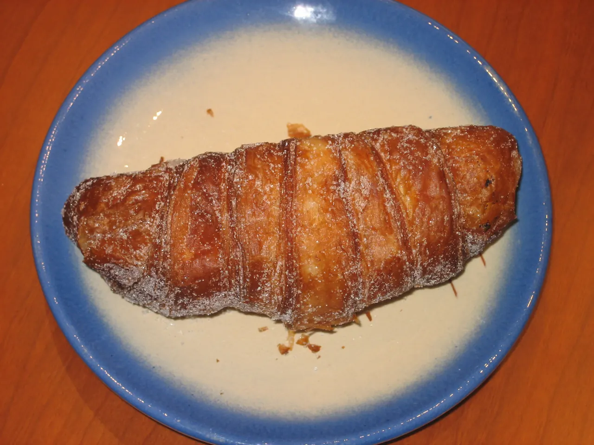
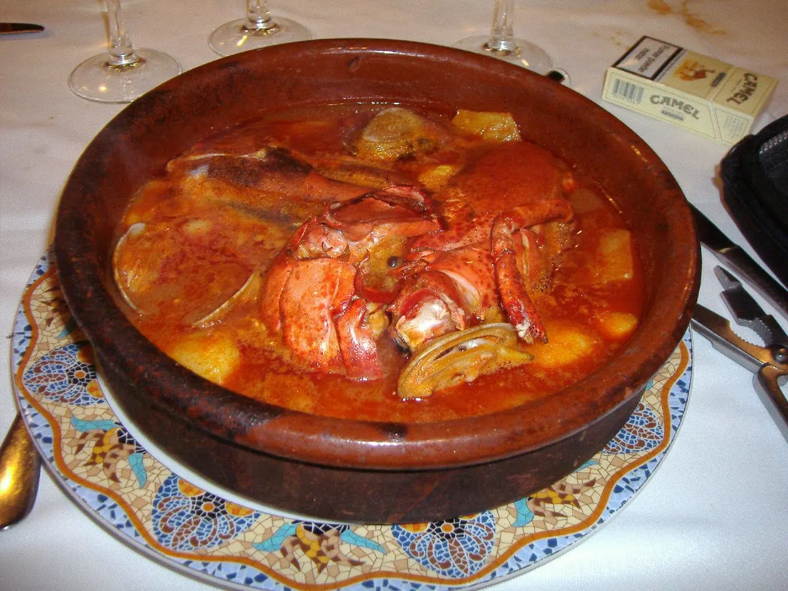

{kind=link}

Collioure
앙리 마티스와 앙드레 드랭이 야수파(Fauvism)를 탄생시킨 지중해 항구마을이자 마요르카 왕국의 해상 왕궁.

이 3박의 거점은 Girona 시내가 아니라 Bàscara의 농촌 숙소다. 한곳에 머물면서 Girona의 중세도시, 프랑스 카탈루냐의 Collioure, Costa Brava의 해안마을과 Empordà의 석조마을을 자동차로 연결한다.
이 구간의 매력은 국경보다 문화권이 먼저 보인다는 데 있다. 스페인과 프랑스를 오가지만 언어와 음식, 마을의 풍경에는 카탈루냐 문화가 이어진다. Girona의 성벽과 골목, Collioure의 항구와 야수파 풍경, Empordà의 석조마을을 서로 다른 하루에 경험한다.
Bàscara는 관광지가 아니라 이동 거점이다. 매일 저녁 숙소로 돌아오는 구조이므로 마지막 방문지를 무리하게 늘리지 않고, 야간 운전을 최소화하는 것을 우선한다.
| 날짜 | 핵심 일정 |
|---|---|
| 9/1 화 | Barcelona · Sitges → Bàscara |
| 9/2 수 | Collioure · Cadaqués |
| 9/3 목 | Tossa de Mar · Sant Feliu · Pals · Peratallada |
| 9/4 금 | Bàscara 체크아웃 · BCN 공항 렌터카 반납 · Nice 이동 (VY1521) |
상세 시각, 이동, 주차, 식사와 대체 일정은 각 날짜의 Day 페이지에서 확인한다.

앙리 마티스와 앙드레 드랭이 야수파(Fauvism)를 탄생시킨 지중해 항구마을이자 마요르카 왕국의 해상 왕궁.

세계 최대 폭(23m)의 기둥 없는 단일 고딕 신랑과 11세기 창조의 태피스트리를 품은 카탈루냐 고딕의 걸작.

기원전 1세기 로마 성벽부터 14세기 카롤링거·중세 성벽을 따라 걸으며 구시가지 붉은 지붕과 피레네산맥을 360도로 조망하는 공중 산책로.

구시가지와 신시가지를 가르는 오냐르 강변의 파스텔톤 채색 가옥들과 구스타브 에펠의 붉은 철교.

살아있는 거대한 천연 암반을 수직으로 파내어 만든 8m 깊이의 해자와 돌골목이 원형 그대로 남은 중세 요새 마을.

흰색 회반죽 가옥과 아치 회랑(Les Voltes), 쪽빛 바위 만(Cove)을 잇는 카미 데 론다 해안 산책로가 있는 코스타 브라바의 원형 어촌.

엠포르다 평야가 내려다보이는 언덕 위에 완벽하게 복원된 카탈루냐 고딕 석조 요새 마을.

14세기 중세 성채와 카르멜회 수도원, 카탈루냐 카바(Cava) 와이너리 박물관이 있는 역사 마을.

1892년 지로나 인디펜덴시아 광장에 문을 연 역사적인 레스토랑. 마르 이 문타냐와 엠포르다 정통 요리.

지로나 구시가지 남쪽에 위치한 60여 개 가판대의 중앙 시립시장. 엠포르다 치즈, 샤퀴테리, 추쇼의 본산.


엠포르다 요리의 핵심은 바다와 산의 식재료를 한 접시에 조합하는 마르 이 문타냐(mar i muntanya)다. 내륙 농가와 지중해 어촌이 인접한 지형적 특징에서 발전한 고유의 조리법이다.
거점은 Girona 시내가 아니라 Bàscara 의 농촌 B&B(Plaça de l'Església 6)다. 예약 확정 3박(9/1–9/4). 구시가지·해안마을은 전부 차로 왕복하므로 숙소는 잠자리와 출발점이고, 하루의 성패는 출발 시각이 정한다.
이번 구간의 거점은 Girona 시내가 아니라 Bàscara의 농촌 B&B다. Girona와 해안·석조마을은 모두 차량으로 왕복하며, 저녁에는 숙소로 돌아오는 구조다.
숙소 주변 도보 생활권이 제한적이므로 물과 아침거리, 이동 중 먹을 간단한 식품은 Girona나 당일 방문지에서 미리 준비한다.
늦은 저녁식사 후 다시 운전하는 일정은 피한다. 숙소 주차 위치와 야간 출입방법은 체크인 때 확인한다.
장거리 운전이 없는 아침에는 Bàscara 숙소 주변에서 30–40분 정도 가볍게 걷거나 뛴다. 노면과 차량 통행을 확인하고 어두운 시간에는 뛰지 않는다.
늦은 귀가 — 모든 귀환이 야간 운전이다. Bàscara 복귀는 18:30 을 기준으로 잡고, 늦어지면 마지막 마을(Pals·Peratallada)을 먼저 뺀다.
Day 4 Barcelona 체크아웃 뒤 Sants 에서 렌터카를 인수하고 C-32/AP-7 로 Sitges 를 들른 다음 Bàscara 로 들어간다. 17:30 체크인 예정. 인수 지연이 그날 전체를 미루므로 Sitges 는 축소 가능한 구간으로 둔다.
9.1(화) · Day 4 · Barcelona → Sitges → BàscaraDay 7 09:30 체크아웃. BCN 공항 T1 에 12:30 렌터카를 반납하고 VY1521(15:30→16:55)로 Nice 로 간다. 반납 시각이 항공편을 잡고 있으므로 이날은 다른 일정을 넣지 않는다.
9.4(금) · Day 7 · Nice3박 동안 국경을 왕복하고 두 나라의 도로 체계를 오간다. 렌터카 계약서에 국경 통과가 허용돼 있는지 반드시 확인한다. 보험 적용 여부와 직결되므로 허용 범위 밖 주행은 피해야 한다.
스페인과 프랑스는 고속도로 표기 체계가 다르다.
차량 인수 때 연료 종류를 확인하고 주유구 라벨을 사진으로 남겨 둔다.
Bàscara 체류는 렌터카가 기본이다. 차량 계획이 바뀔 때 Girona권 철도·버스 연결 범위를 확인하는 비상 자료로 사용하고, 실제 출발시각은 운영기관에서 다시 조회한다.
{kind=link}
{kind=link}